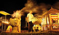
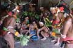
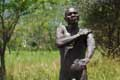
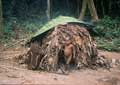
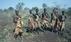
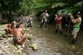

Photogallery


AbsolutAdventure – Tours and travel, mountaineering and expeditions
Africa, Eurasia, North and South America, Australia, Antarctica and Greenland, and Arctica – these are the homes of adventure. These are our homes as well.
Absolut Adventure offers its clients the best of the best. Expeditions, climbing, rafting, trekking, diving in the most beautiful places in the world, horse riding expeditions, Skialpinism, 4×4, etc. Any adventure on any continent.
Absolut Adventure is a specialized travel agency with scope reaching to all continents.
We offer standard as well as customer fitted itineraries. We are able to arrange any itinerary anywhere in the world. Custom prepared trips must be, however, arranged directly with our travel agency.
Offer of tours and expeditions:
Papua New Guinea and Irian Jaya tours and expeditions
Standard itineraries Our offer – tours and expeditions Papua (Irian Jaya) and Papua New Guinea
Tree People Korowai and Kombai, Yali, Mamberamo, Asaro Mudmans and other tribe expeditions. Detailed information is available at PapuaTrekking.com (sponsored by Absolut Adventure).
Carstensz Pyramid climbing (Puncak Jaya) – detailed information is available at CarstenszPapua.com (sponsored by Absolut Adventure).
NEW

Photo©Tomáš Petr
On-the-road for sightseeing, wild animals, sacred places, tea plantations and marvellous beaches with Petr Jahoda, traveller and photographer, and Tomas Petr, photoreporter… more
Siberut, the island of medicine men – TREATMENT PROGRAM

Photo©Petr Jahoda
The expedition goes to the heart of the mysterious island of medicine men. Their houses are decorated by monkey skulls and other animal bones. You will see a real medical ceremony. It is a unique chance to see the real medicine men in action… more
Papua New Guinea – West Papua
Photo©Petr Jahoda
There are many Tree people tribes living in Papua. I've visited 6 of them. Now I'd like to take you to the 6th one again, the wildest one of all. If you've been to the Korowai or Kombai, you've probably flew over the area… more
Tree people, Korowai and Kombai – 2 weeks
Note: There is the one of the last expeditions?we hope it is not the last expedition because the people are civilizing on Papua and so they are exerting in this way… more
Mysterious Mamberamo – 2 weeks
Africa
DONGA – FORBIDDEN FIGHTS OF SURMAS + BULLJUMPING – Maturity Rites of Hamars

Photo©Petr Jahoda
300 naked fighters, their bodies painted, are standing, holding 2.5 meters long rods and nervously awaiting the fight for which they have been training all year long… more
Pygmies, the dwarves of the forest – Central African Republic

Photo©Petr Jahoda
Pygmies are the world's best-known nationality of dwarfs. At the same time, they are also one of the most primitive types. They are hunters and gatherers, which means that they don't grow anything… more
Ethiopia – the expedition to the NYANGATOM tribe – The Great African Adventure

Photo©Petr Jahoda
The land you decided to visit is exotic not only for its geographic location, but especially for its native civilizations and historic sights. We will travel by off-road vehicles through the wild African nature to get closer to the various wild African tribes… more
Ethiopia – tribes in the basin of the river Omo
Ethiopia is one of the most beautiful countries in Africa. It has become safer, and now it is placed among the safe countries of Africa… more
Himba, the beauties of a the crimson desert – Namibia
Bushmans – Botswana and Kalahari
Kenya, Tanzania, Safari and Zanzibar
Asia
Siberut, the island of medicine men – Indonesia, Sumatra, Mentawai Islands

Photo©Petr Jahoda
The expedition goes to the heart of the mysterious island of medicine men. Their houses are decorated by monkey skulls and other animal bones. You will see a real medical ceremony, because I go there to get the re-treatment for my old illness… more
Mongolia on horseback – Mongolia
Arabia
YEMEN IS possibly THE MOST BEAUTIFUL COUNTRY OF ARABIAN PENINSULA. The country where wealth and poverty meets. PARADISE THAT TOURISTS HAVE NOT FIND OUT YET. Worldwide… more
Mountaineering and seven summits
Carstensz Pyramid (Puncak Jaya)
The highest mountain of Australia and Oceania, one of the peaks of the 7summits project. A detailed description is available at CarstenszPapua.com, an information rich site sponsored by Absolut Adventure.
Kilimanjaro
The highest African mountain, one of the 7summits peaks.
Elbrus (Kavkaz)
The highest European mountain (?) – one of the 7summits peaks.
Under Construction
The offer for all 6–7 continents (according to one's opinion) is currently being processed. Please, have patience with us. We are often on the road, and have very little time left for office work. Come with us and you'll see why :)
North Pole Expeditions
Rafting
White Nile Rafting – probably the world's most difficult commercial rafting – Uganda, Africa
Victoria falls Rafting – one of the world's most difficult commercial rafting – Zambia and Zimbabwe, Africa
Himalaya Rafting
Wild tribes of Ethiopia and National Park Bale Mountains
East bank of river Omo – 2 weeks
Ethiopia is one of the most beautiful countries in Africa. It has become safer, and now it is placed among the safe countries of Africa. There are many Christian monuments in the north of the country, and in the southwest of Ethiopia there is the highest concentration of aboriginal tribes in the entirety of Africa… more
Absolut Adventure – Links
Papua trekking A website full of up-to-date practical information on traveling to Papua New Guinea. Written by seasoned guides.
Carstensz Papua Climbers2climbers website featuring information on permits, weather, climbing routs, history of Carstensz climbing & more.
Petr Jahoda Petr Jahoda is an experienced traveler, photographer and writer.
Outdoor Directory A comprehensive collection of resource links dedicated to outdoor activities, camping gear, clothing, backpacks, navigation, equipment and community.
Následující stránka: Expeditions